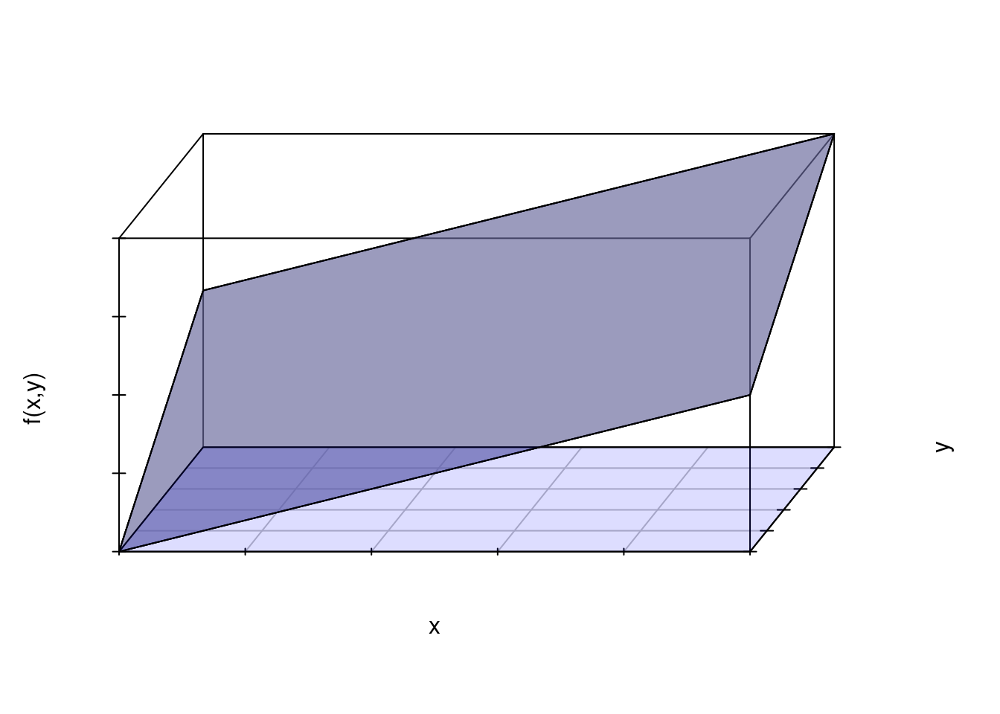
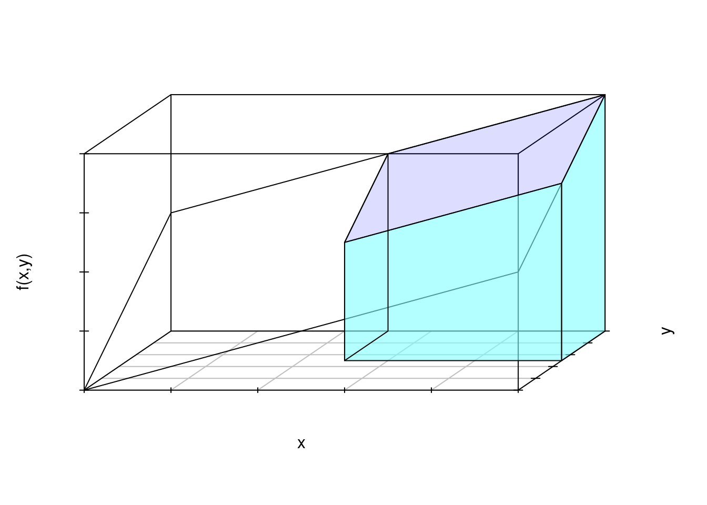

Ejemplo Una mezcla se forma con la combinación de 2 ácidos en dos litros de agua. La cantidad de ácido \((X)\) y la cantidad de ácido \((Y)\), en litros, que se vierten en una mezcla se modela con la función \(f_{_{XY}}\) como se presenta a continuación:
\[\begin{equation*} f_{_{X,Y}}(x,y)=\left\lbrace \begin{array}{ccl} k(x+y)&;& 0\leq x\leq 1\:,\:0\leq y\leq 1\\ 0&;& \mbox{ en otro caso} \end{array} \right. \end{equation*}\]
La representación gráfica de la función de densidad conjunta para X y Y , se puede obtener con el siguiente código:
library("scatterplot3d")
x <- c(0,1,1,0,0)
y <- c(0,0,1,1,0)
z <- c(0,1,2,1,0)
s <- scatterplot3d(x,y,z, type='l',xlim=c(0,1),ylim=c(0,1),zlim=c(0,2), angle=60,
xlab="x", ylab="y", zlab="f(x,y) ",scale.y=0.4,cex.axis=1.5, cex.names = 1.5,
grid=TRUE, box=TRUE,
label.tick.marks=FALSE)
polygon(s$xyz.convert(x,y,z),col="#80808099") # gris
x0=c(0,1,1,0)
y0=c(0,0,1,1)
z0=c(0,0,0,0)
polygon(s$xyz.convert(x0,y0,z0),col="#0000ff22") # morado
x1=c(0,1,1,0)
y1=c(0,0,1,1)
z1=c(0,1,2,1)
polygon(s$xyz.convert(x1,y1,z1),col="#0000ff22") # morado
La probabilidad de : \(P(0.5 \leq X \leq 1; 0.5 \leq Y \leq 1)\) es igual a:
\[ \begin{eqnarray*} P(0.5\leq X\leq 1; \:0.5\leq Y\leq 1)&=&\int_{0.5}^{1}\int_{0.5}^{1}(x+y)\:dx\:dy\\ &=&\int_{0.5}^{1}\left[\frac{x^2}{2}+xy\right]_{0.5}^{1}\:dy\\ &=&\int_{0.5}^{1}\left[\left(\frac{1}{2}+y\right)-\left(\frac{1}{8}+\frac{y}{2}\right)\right]\:dy\\ &=&\int_{0.5}^{1}\left(\frac{y}{2}+\frac{3}{8}\right)\:dy=\left[\frac{y^2}{4}+\frac{3}{8}y\right]_{0.5}^{1}\\ &=&\frac{4}{16}\]
Se puede representar con el siguiente volumen:
library("scatterplot3d")
x <- c(0,1,1,0,0)
y <- c(0,0,1,1,0)
z <- c(0,1,2,1,0)
s <- scatterplot3d(x,y,z, type='l',xlim=c(0,1),ylim=c(0,1),zlim=c(0,2), angle=45,
xlab="x", ylab="y", zlab="f(x,y)",scale.y=0.4,
label.tick.marks=FALSE)
# techo si
x4=c(.5,1,1,.5)
y4=c(.5,.5,1,1)
z4=c(1 ,1.5,2,1.5)
polygon(s$xyz.convert(x4,y4,z4),col="#0000ff22") #violeta
# frente si
x5=c(0.5,1,1,0.5)
y5=c(0.5,0.5,0.5,0.5)
z5=c(0,0,1.5,1)
polygon(s$xyz.convert(x5,y5,z5),col="#80FFFF99") # azul claro
# lateral derecho si
x6=c(1,1,1,1)
y6=c(.5,1,1,.5)
z6=c(0,0,2,1.5)
polygon(s$xyz.convert(x6,y6,z6),col="#80FFFF99") # azul claro
# lateral izquierdo si va transparente
x7=c(.5,.5,.5,.5)
y7=c(.5,1,1,.5)
z7=c(0,0,1.5,1)
polygon(s$xyz.convert(x7,y7,z7)) # 